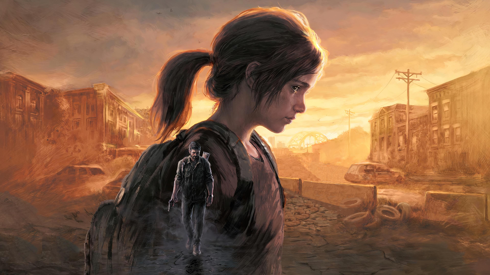
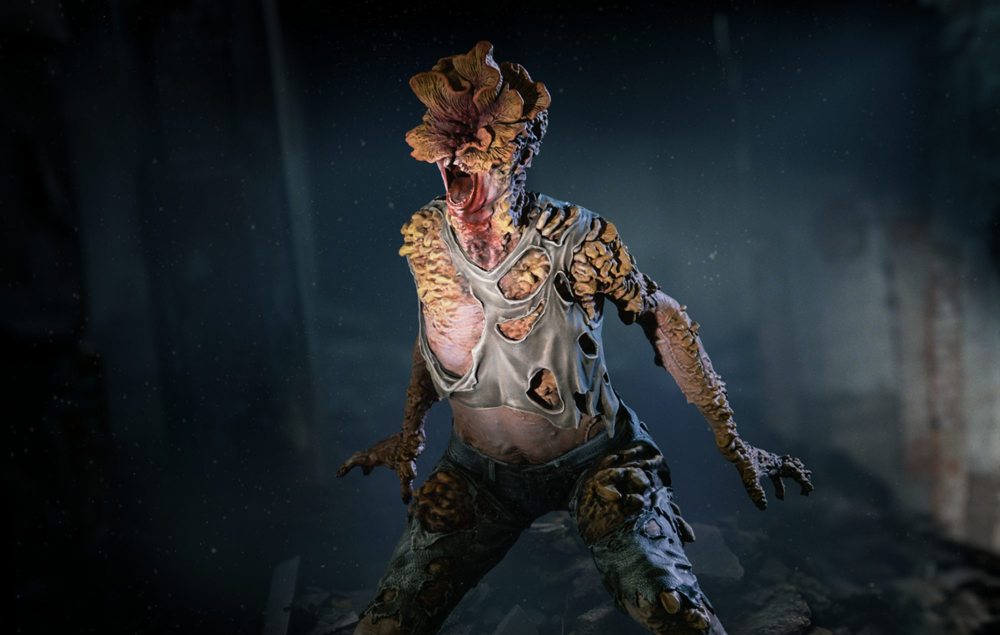

Cuando estés perdido en la oscuridad, busca la luz



the last of us
The Last of Us no es solo un relato sobre el fin del mundo; es una elegía a la condición humana en su estado más puro y desesperado. Es una historia que respira a través de los silencios, de las miradas cargadas de lo que no se dice y de la brutalidad de un amor que, en un entorno devastado, se vuelve tanto un salvavidas como una maldición.
En su núcleo, la obra nos sumerge en el viaje de Joel, un hombre roto por el duelo que ha blindado su corazón con cinismo, y Ellie, una niña que nunca conoció un mundo con esperanza pero que se niega a perder su luz. Lo que comienza como una misión de supervivencia mecánica se transforma en un vínculo inquebrantable: el renacer de un padre y el despertar de una hija en un paisaje de cenizas.
Es una descripción de la belleza que sobrevive entre las ruinas: la naturaleza reclamando las ciudades, la risa de un niño ante un cómic viejo y la terrible certeza de que, a veces, el miedo a la pérdida es más peligroso que cualquier monstruo. Es, en última instancia, una pregunta dolorosa que queda suspendida en el aire: ¿qué estarías dispuesto a sacrificar por la única persona que te hace sentir vivo?